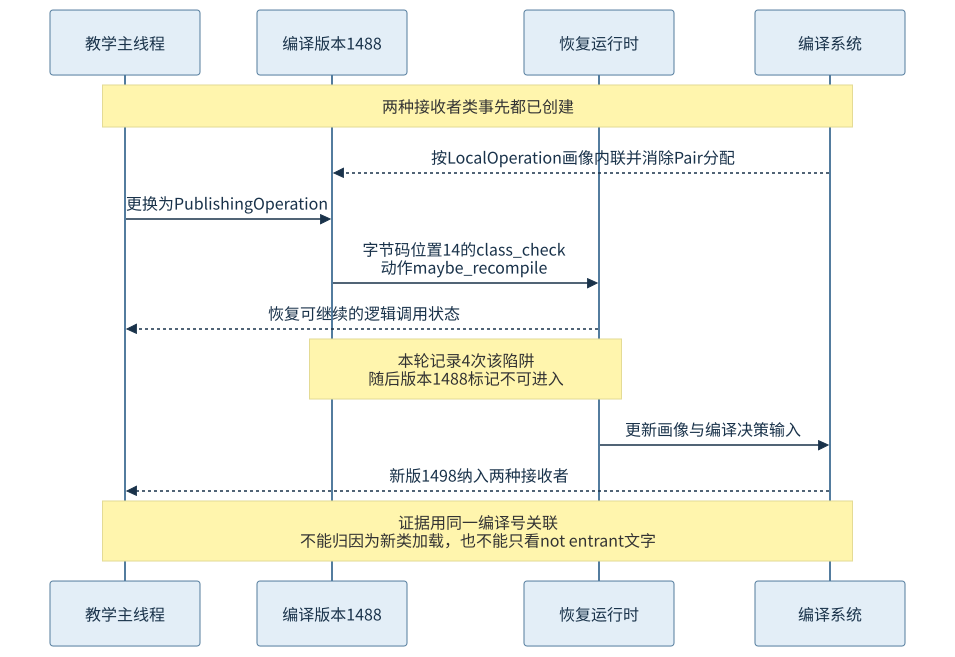

第四篇 · 执行引擎与动态编译
第 18 章 推测优化、去优化与代码生命周期
推测优化需要留下恢复通道。运行时既要让假设失效后的当前调用继续正确执行，也要管理旧代码仍被活动栈引用时的生命周期。
从现象开始
evaluate的局部Pair本来可以只用字段值表示，后来另一个合法实现却要发布它。编译代码怎样把这个对象和逻辑调用状态重新交给可继续执行的路径？本章使用Java开发工具包（Java Development Kit，JDK）25.0.5.0.2、HotSpot、macOS AArch64的同一进程证据，区分直接事件与源码解释。
18.1 优化假设及其依赖
本节配图：CH18-F01。
18.1.1 优化把哪些事实当成依据
第14章的调用点可按接收者画像内联常见目标，第17章又可在内联后消除局部对象。类层次、分支倾向与类型分布使快路径更短，但这些依据的强度不同：类型规则可能保证某目标不可覆盖，当前层次可能只有一个实现，历史画像则只说明过去看到什么。
RecoveryJourney先创建两种Operation，再重复调用LocalOperation。evaluate创建Pair并把它传给接口方法，首次服务端编译器（Server Compiler，C2）内联后可以只保留两个字段值。第二阶段把接收者换成PublishingOperation，该实现把Pair发布出去，因此后续执行必须有符合语义的可观察对象。
18.1.2 守卫与依赖记录并非同一机制
运行时守卫在代码中检查接收者类型或其他条件，不满足时转回退或陷阱。依赖记录则让运行时在相关类层次等事实改变时找到受影响代码并失效；不需要每次调用都做同样检查。两者可以在同一编译结果中并存。

本轮两种类已事先实例化，故直接证据支持调用点新接收者到来；不能把它说成加载新类破坏类层次分析（Class Hierarchy Analysis，CHA）依赖。此类依赖失效另依据Dependencies与类加载相关实现解释。
18.2 罕见陷阱与去优化触发
18.2.1 把少见路径交回运行时
罕见陷阱（uncommon trap）让编译器把当前不常走或不值得展开的路径交给运行时处理，并借助恢复信息继续合法执行。陷阱不是Java异常，也不表示程序做了非法输入；新接收者完全可以符合接口契约。优化器为常见情况取舍，运行时承担变化时的恢复。
编译日志中parse阶段的uncommon_trap条目可表示生成了一个潜在陷阱点，并不证明运行中真的抵达。实际触发需看带线程、编译号与时点的运行事件，或JDK飞行记录器（JDK Flight Recorder，JFR）的Deoptimization事件。本轮两种证据均指向evaluate的编译号1488、字节码位置索引（Bytecode Index，BCI）14、invokeinterface、reason=class_check。
表中栈上替换（On-Stack Replacement，OSR）指循环中的执行方式迁移，详见18.4。
| 方法／编译号 | 直接证据 | 可支持的判断 |
|---|---|---|
| evaluate／1488 | LocalOperation内联、分配消除、BCI14 class_check | 特定推测路径实际失败 |
| evaluate／1498 | 两种接收者画像、class_check_traps=4 | 同方法适应变化重新编译 |
| longLoop／1508→1510 | 第3→4层OSR，入口BCI4 | 循环有专用编译入口 |
| longLoop／1510 | 退出相关unstable_if | 不同于接口类型陷阱 |
18.2.2 陷阱、失效和重编译按身份相连
本轮1488出现4次class_check事件，随后被标记made not entrant: uncommon trap；1498的新编译记录class_check_traps=4，并内联两种接收者路径。这展示运行时如何把变化反馈给下一次决策。maybe_recompile是事件动作，不能只凭名字认定每次事件都立刻创建新版本。
若负载不断切换，恢复、画像更新与重编译会反复消耗资源；更保守策略也可能胜过追逐少数类型。没有事件时，先核对目标是否编译、是否真的使用该画像内联、守卫是否存在，以及记录配置是否覆盖事件，不能无限增加负载来追逐预期日志。
18.3 恢复解释执行状态
本节配图：CH18-F02。
18.3.1 恢复的单位是逻辑调用状态
内联后一个物理帧可能包含多个逻辑方法。去优化根据机器位置定位ScopeDesc等调试信息，读出逻辑调用链、BCI、局部变量、操作数栈与监视器状态；fetch_unroll_info_helper计算要建立的解释帧，再由unpack_frames整理并接入继续执行的位置。

并非源码里每个变量都需要保留原值：只需恢复在该续点仍有语义用途的状态。回收用引用映射指出某些位置是对象引用，却不足以独自重建全部逻辑调用与标量值。异常恢复、返回恢复与需要重执行字节码的情形也有不同续点，不能把去优化描述为从方法开头重新跑一遍。
18.3.2 物化恢复对象身份和字段
rematerialize_objects从作用域元数据取待恢复对象；realloc_objects先申请对象实体，再由reassign_fields填回字段与对象之间的引用。先分配再赋字段有助于保持共享引用与循环关系。它不通过调用用户构造器重放初始化，否则可能重复日志、注册或其他已发生的副作用。
本轮1488有Pair的分配消除记录，随后接口调用前发生class_check，发布实现最终可读到字段49999与50000。日志直接证明优化与恢复事件，具体每个对象何时分配则由锁定源码和恢复需求解释；没有逐对象物化追踪，不能将机制推导写成已捕获对象地址。分配不足还有专门失败处理，本例没有主动耗尽内存。
18.4 长循环与执行方式切换
本节配图：CH18-F04。
18.4.1 只调用一次也能在循环中变热
栈上替换（On-Stack Replacement，OSR）把正在运行的循环迁移进专用编译入口，不必等待方法先返回再调用。longLoop只调用一次，循环3000000次；回边活动足够让运行时请求OSR代码。SharedRuntime::OSR_migration_begin从解释帧复制局部值和活动监视器等状态到迁移缓冲，编译入口按约定取得继续循环需要的数据。
本轮longLoop有第3层OSR编译1508、第3层普通编译1509与第4层OSR编译1510；OSR位置均为BCI 4。第4层循环代码替代低层循环版本后，低层版本以OSR invalidation of lower level失效。仅见百分号记录是编译证据，实际陷阱事件落在相同OSR编译号又为执行提供进一步证据。
18.4.2 三种入口转换的方向不同
普通编译入口服务新的方法调用；OSR入口服务已经执行到特定循环位置的活动；去优化从机器状态恢复解释语义。前两者都产生编译代码，后者沿恢复元数据逆向展开，但不是把机器指令反编译回Java源码。
本轮1510在循环退出相关少见分支记录unstable_if，随后也变为not entrant。它不是接口类型变化的class_check，两种原因应分别解释。长循环的一个方法可以同时拥有普通和不同层级的OSR版本，不能只按方法名合并成一条版本记录。

18.5 编译代码的生命周期
本节配图：CH18-F03。
18.5.1 不可进入仍可能被活动栈引用
nmethod同时保存机器代码、入口、常量或对象相关信息、依赖、引用映射和恢复元数据。锁定JDK25的_state列出not_installed、in_use、not_entrant。make_not_entrant修补普通入口或移除OSR入口，并维护失效与重编译状态；它不会立刻删除正在被活动帧使用的机器码与元数据。

18.5.2 解除关联与回收空间还需要协调
当前实现另以is_unloading等信息配合卸载，unlink清理依赖与Method关联、处理OSR和外部通知，并登记在安全条件下清理；purge才完成相应空间回收。并发类卸载和暂停式卸载的安全时点不同，不能将旧版本常见的zombie枚举原样画入当前_state状态机。
代码缓存还存不同层级与用途的代码，压力会反馈编译决策及冷代码处理。第16章实际快照显示编译启用、full_count=0，因此本轮没有代码缓存耗尽案例，也没有记录1488最终purge的时刻。失效、栈上不再活动和空间最终可回收是三个需要分别证据的问题。
证据与复做
初阶段结果14999950000；更换接收者后发布字段49999、50000；长循环后正常退出，结果1176801470940024216。JFR和编译日志同指1488的class_check，1498包含两类画像；longLoop的OSR第4层1510另有退出分支陷阱。完整大日志移入artifacts/ch18-20261103-01，精选事件、原始飞行文件与摘要在本章evidence，索引明确原路径及去向。
回顾与边界
判断变化来自调用形态、编译阶段还是假设失效，应同时对齐接收者、编译号／层级、实际陷阱原因和业务阶段。对象可被消除的条件由逃逸与使用方式决定，恢复依赖保存的标量和身份元数据。启动、预热、稳定吞吐分开，是因为这些阶段的编译成本和可用代码不同；本篇机制观察未取代性能测量。
第四篇到这里连成调用→画像→编译→优化→恢复的链条。第五篇将解释生成代码怎样通过根、引用映射、屏障和安全点与垃圾收集协作；后续章节尚未实施时，从全书目录查看其范围。
来源
- S01：锁定deoptimization.cpp的uncommon_trap_inner、fetch_unroll_info_helper、rematerialize_objects、realloc_objects、reassign_fields与unpack_frames。
- S02：sharedRuntime.cpp的OSR_migration_begin／end。
- S03：nmethod.hpp及nmethod.cpp的当前枚举、make_not_entrant、unlink与purge。
- O01：本章编译记录、JFR事件、字节码与标准输出；完整索引见证据目录。